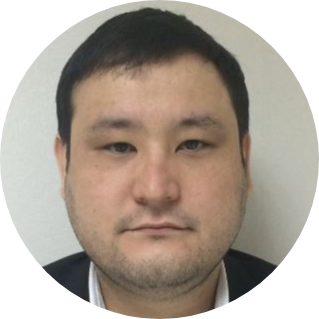

|  | Berik BakhytzhanContact meExperienced in Oil and Gas business. Deputy Dean at Kazakh-British Technical University. MSc in Pipeline Engineering (UK). I have more than 10 years of experience in oil and gas industry. I participated in the launch of the Kashagan project in onshore and offshore sites and worked on managing issues and making decisions for the launch of the field (<400K bbl/d). At the moment I am working as a Deputy Dean at Kazakh-British Technical University in Oil & Gas Faculty. |
Responsible for the educational process at Atyrau Petrotechnical College (APEC). Drawing up a curriculum for the work of professors and managing the administrative work of the faculty. Working with partners in oil and gas companies and the attraction of their experts to work with students. Working cooperatively with partners in oil and gas companies for providing industrial internships for the students.
Consideration of technological plans for development of the Kashagan field for Shacom & Mancom decision making boards. Monitored field development and analysis of the current state of development. Worked cooperatively with Kashagan B.V. on evaluation and approval of work programs and the project budgets of NCOC N.V. Cooperatively worked with authorities on local content obligations at NCOC N.V. Prepared analytical notes, reports, references on the implementation of local content obligations. Monitored weekly, monthly reports of the projects to develop recommendations for management.
Maintained Reliability Management System for the assets in accordance with the corporate reliability strategy. Facilitated reliability processes and investigations in order to ready for the start up in 2016. Carried out investigations for onshore boiler failures and insulation failures at offshore processing plant, which were a major obstacle for the Start up. Facilitated and supported RCA site studies and interacted with other disciplines on a daily basis to ensure that actions developed in the process of improving operational reliability and provided Reliability Engineering support to Operations and Maintenance personnel. Worked cooperatively with the operations team in order to identify Bad Actors and made recommendations in collaboration with other disciplines and ensured full API & ASME standards compliance of the processes and equipment.
Worked in commissioning of the D island process plant. Responsible for the handover activities of Utilities plants. Carried out the startup process of the production facilities in cooperation with commissioning team. Worked with the start up team for the operation of compressors, pumps, heaters, chemical units, etc. Cooperatively worked with the maintenance team in order to maintain equipment failures and to do preventive activities. Supervised all activities in accordance with safety manners and Permit to Work procedures.
Passed all competence assessments and additional training programs in Petrofac Training Units in Singapore. Worked on Start Up, troubleshooting and shutting down activities of the training plant. Attended H2S, confined space, working at height and first aid courses which were mandatory for a high H2S plant.
Attended training programs for the Kashagan project production operators. Learned the basics of working as a production oil and gas operator according to an international standard with experienced professionals in the field.